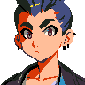

Proposal 1
Operator rail + small mark
Replace the avatar badge with a color rail on the existing group tree line plus a tiny “OP” mark. This is the calmest treatment and keeps tab titles perfectly aligned.
COVENANT
notifications×
OPresume sessions×
OPoperator layout×
COVENANT
notifications×
OPresume sessions×
OPoperator layout×
- Best for dense tab lists.
- No portrait noise, no level bubble.
- Operator color becomes the identity.
Proposal 2
Inline identity chip
Show a tiny avatar plus the operator’s short name before the title. The chip uses low-alpha operator color, so it feels intentional instead of stuck on top.
COVENANT
notifications×
Soraresume sessions×

Mikaoperator layout×COVENANT
notifications×
Soraresume sessions×
Mikaoperator layout×
- Best when operator identity matters.
- Works in top tabs and left tabs.
- Can collapse name on narrow widths.
Proposal 3
Trailing dock + live dot
Keep the title clean. Put the operator at the right edge before the close button, with a status dot and optional ring. This makes the tab read like “file title first, operator metadata second”.
COVENANT
notifications×
resume sessions×
operator layout×
COVENANT
notifications×
resume sessions×
operator layout×
- Best compromise for current UI.
- Title never shifts left/right.
- Live state is visible without text.